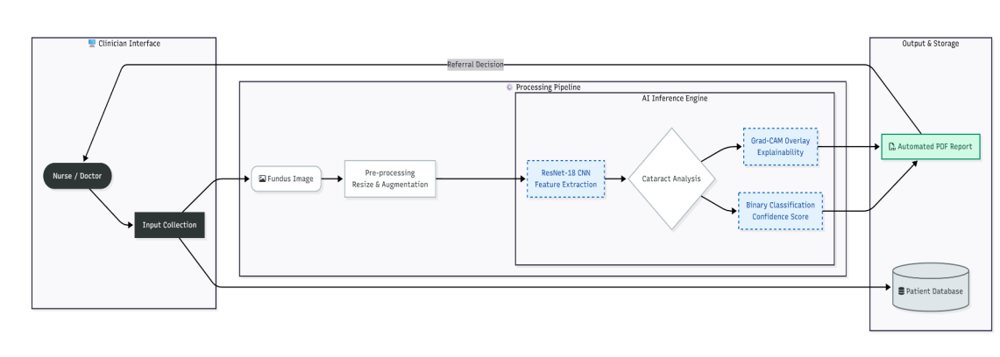

InSight Documentation Suite
InSight is a clinical decision-support microservice that detects cataracts from ocular fundus imagery using a ResNet-18 Convolutional Neural Network (CNN) paired with Grad-CAM visual explainability.
Target Audiences & Documentation Scope
This documentation suite serves two primary technical audiences:
- Integration Engineers & Developers: Guidance on deploying the FastAPI inference engine, managing container dependencies, and querying screening endpoints.
- Clinical Technicians & Operators: Operational workflows for uploading fundus scans, executing batch processing, and interpreting Grad-CAM saliency heatmaps.
Architecture & System Flow

Planned Documentation Sections
1. Developer Quickstart & Installation
- Environmental prerequisites (Python 3.9+, virtual environment isolation).
- Service startup procedures (FastAPI backend + Streamlit frontend).
- Local verification checks.
2. API Reference & Data Contracts
POST /predict/single: Payload format, multi-part form parameters, and status responses (200 OK,422 Unprocessable Entity).POST /predict/batch: Queue handling for multiple retinal scans.- Authentication & Role-Based Access Control (RBAC) headers via Supabase.
3. Model Explainability & Interpretability Guide
- Explanation of Grad-CAM heatmaps for non-ML engineers.
- Clinical confidence scoring and triage thresholds.
4. Troubleshooting & Known Error States
- Common environment failures (PyTorch CUDA vs CPU mismatches, Supabase connection timeouts).
- Resolution runbooks.